CAE Settings
VCollab Pro users can edit range, colors, format of legend values, etc. using options available in CAE Settings. The modifications are grouped into four tabs as below.
- Legend Settings
- Edit Legend
- Hotspot Finder
- Vector Plot
Legend Settings
The various fields available in the Legend Settings tab are explained below.
Change Range Change min & max values. Min Modify min value in the range. Max Modify max value in the range. Filter Applies palette colors only for values within the min max range. Out of bound values are applied with filter color Filter Parts If enabled, Parts beyond result range will be hidden All Instances Applies the modification to all instances Color Plot Applies/Removes color plot. The model will be seen in material color if this option is off. Min & Max Labels Displays Min and Max value labels attached to corresponding nodes. Update Color Plot on Show/Hide Parts Updates color palette and its values while hiding / showing parts. Header Display Show / Hides Legend Headers, Model Name, Result Name and Instance Name Apply Applies the modifications.

Edit Legend
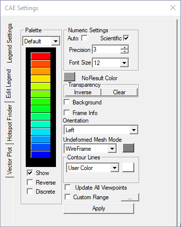
The various fields and options available under Edit Legend tab are explained below.
Palette Choose the colors to be applied on the model. Auto Allows the application to compute text format precision and scientific values. Precision and scientific options are disabled when 'Auto' option is enabled. Scientific Displays the legend values in scientific format. Precision Select the decimal places for contour values Font Size Change the font size. No Result Color Select a color to denote no result data. Default color is grey. Transparency Allows user to invert the transparency and to clear the transparency. Background Enable and set background color. Frame Info Display/Hide frame information Orientation Choose the orientation of the legend - left, right, top or bottom of the view port. Undeformed Mesh Mode Change Undeformed Mesh Mode and its color. Contour Lines Select contour lines color. Show Show/Hide Legend palette. Reverse Reverse the legend values against the color palette. Discrete Switch to discrete fringe bands in color plot. Update All Viewpoints Update the changes to all available viewpoints. Custom Range Switch to customized range palette and color plot. Apply Apply the changes to the viewer. Note
Double Clicking on the legend color palette (including No Result color box) inside the viewer opens up CAE Settings Dialog with Edit Legend page.
Hotspot Finder
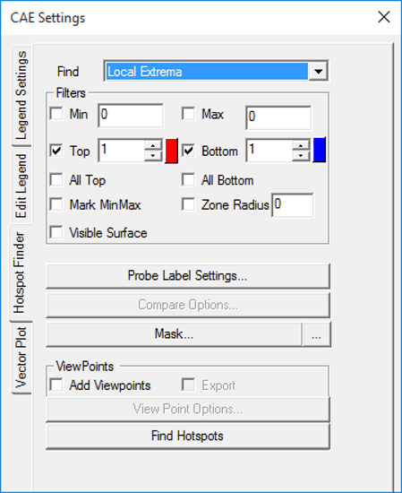
The Hotspot Finder can find in,
- Local Extrema - To find regional or local min and max values.
- Global Extrema - To find the minimum and maximum values in the selected region not like local extreme values.
- Range Cluster - To finds hotspots one per palette range.
The various options and fields seen in Hotspot Finder tab are explained below.
Find Select a mechanism either Local extrema or Global extrema Min Set minimum range. Max Set maximum range. Top Specify the top count. If 5 is specified, the top 5 values will be given Bottom Specify the bottom count. If 5 is specified, the bottom 5 values will be given All Top Includes all same top values and its IDs. All Bottom Includes all same bottom values and its IDs. Mark MinMax Highlight the labels of maximum of top labels and minimum of bottom labels Zone Radius Skip an area around already found hotspots. Visible Surfaces Consider visible labels only. Probe Type Based on this, displays value for current result or all results in a table, or all instances in table or XYPlot. Template Type Provides a list of predefined label formats. Result Options Allows users to customize the list and order of results in the labels. ID Includes or excludes node or element ID in the label Compare Options This option is visible if at least one file is merged with the existing one. It will open a dialog box with compare options. Add Viewpoints Generates viewpoints according to viewpoint options if enabled. Export Exports the viewpoints into either VPT file or microsoft PPT file View Point Options Provides various options to include or exclude different types of viewpoints Find Hotspots Generates viewpoints for the model according to above information
Vector Plot
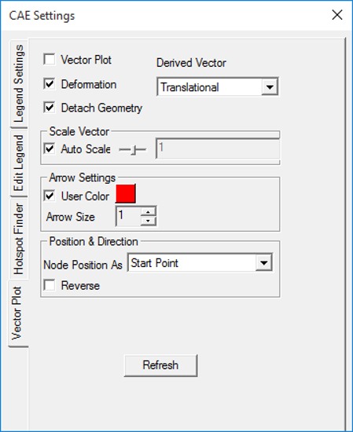
The various fields seen in the Vector plot settings panel are explained below
Vector Plot On/Off switch to plot vectors. Derived Vector Default derived vector for vector result is Translational and for scalar and tensor is Normals. Deformation Sets deformed nodal position as the starting point of the vector. Detach Geometry Displays vector plot of a part, even if the geometry is hidden. Auto Scale Enables Auto Scale for vector plot Scale Slider Control Scale up or scale down. User Color Select a color from the palette for vectors. Arrow Size Choose any one size out of three for the arrow. Node Position As Set nodal position as either start point or end point. Reverse Change the direction of vector. Refresh Re-generates vectors for visible parts. The derived vectors are based on the type of result selected.
Result type Available Derived Vectors Scalar Normals (Nodal or Elemental) Vector Translational (Default) Six DOF Translational (Default)
Rotational
Both
Tensor Normals (Default)
Minimum Principal Direction
Middle Principal Direction
Maximum Principal Direction
Full Tensor
Steps to update Legend with user defined range
- Open the Legend Setting tab by clicking CAE | CAE Settings.
- Click Min and Max options to change range.
- Enter the new range values.
- Click Filter to enable the color window box.
- Select a color to be applied for results which are beyond the user range.
- Click Update Current Instance button.
- Observe the changes in the viewer.
Steps to Edit Legend
Open Edit Legend tab from CAE | CAE Settings
Select "preset#3" in palette dropdown.
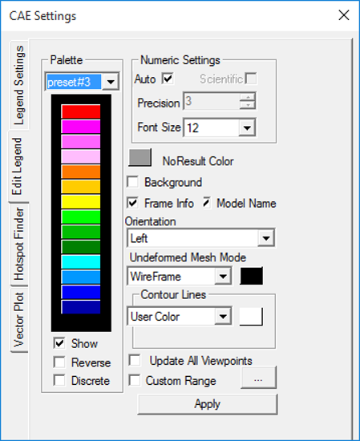
Click Apply and observe the changes in the viewer as below.

Select an option, say Right, under placement drop down.
The legend and frame information is placed on the right side in the viewport.
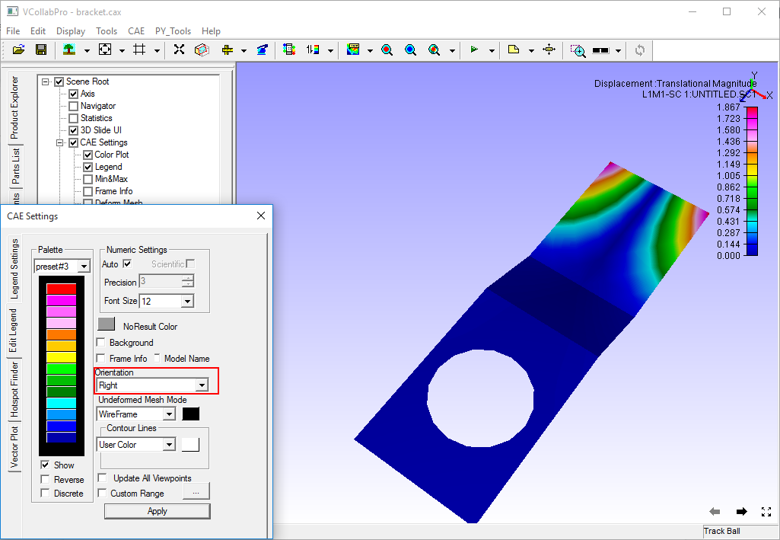
Check Discrete option and click apply.
Palette is changed to discrete color from continuous color.
Contour plot in the model changes according to the modification in color palette.
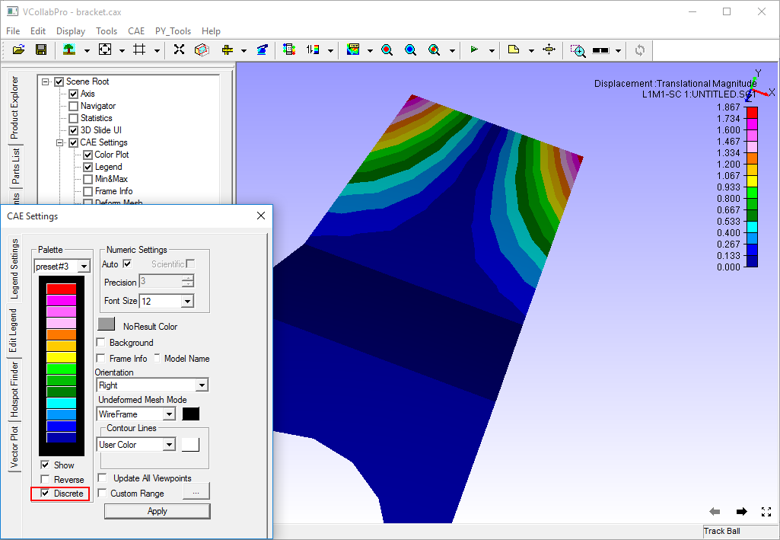
Custom Range
Legend palette values are divided evenly by ‘n’ number of colors. Here the length of any two consecutive ranges is constant and interpolated linearly. Custom range allows users to define any length for any range but with certain limitations.
- Length of a range should be less than length of min and max.
- Users cannot edit extreme values. But it is possible in Legend settings.
- The modified value should be between predecessor and successor values.
- If there are blank in the palette values, it will be interpolated linearly by default.
Steps to set Custom Range
In the Edit Legend tab, check the Custom Range option and click on the button next to it.
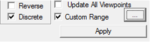
The Custom Range dialog box opens up
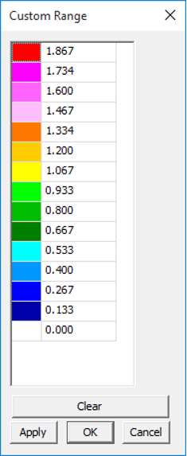
Change any value out of extremum values.
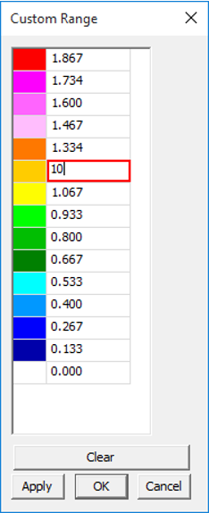
Click Apply.
A warning message saying that values should be in descending order is displayed
Change some values and leave some blanks in the palette.
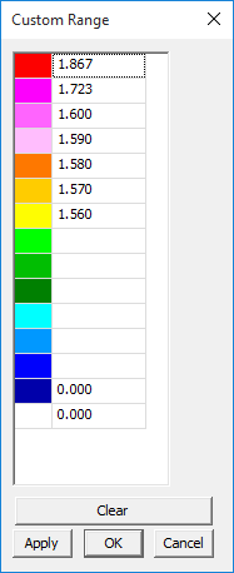
Click Apply and notice that blanks are filled by interpolation.
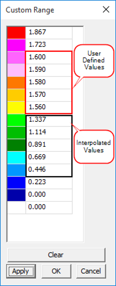
Click OK
Click Apply.
Notice the changes in the color plot of the model according to the new custom range palette.
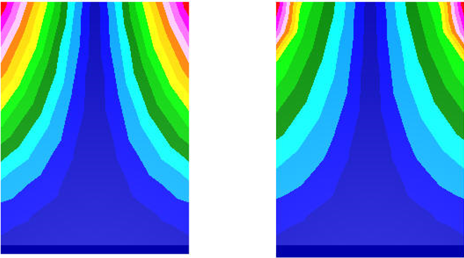
Steps to visualize specific result contour range or zones
Load Airbag.cax from the sample folder.
Select Displacement result with default derived type.
Select the last instance or frame.
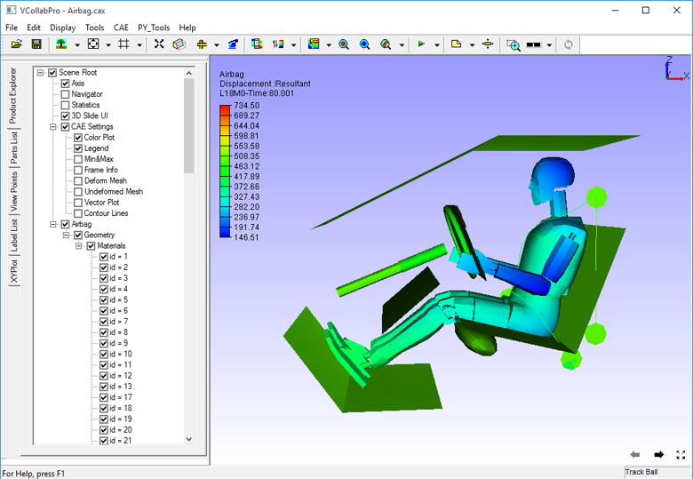
To customize contour, click CAE | Contour Settings and open Legend Settings tab.
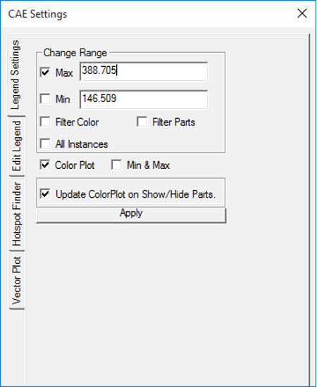
To visualize the result range between 150 to 300 unit, set the min and max fields with 150 and 300 respectively.
Click Apply
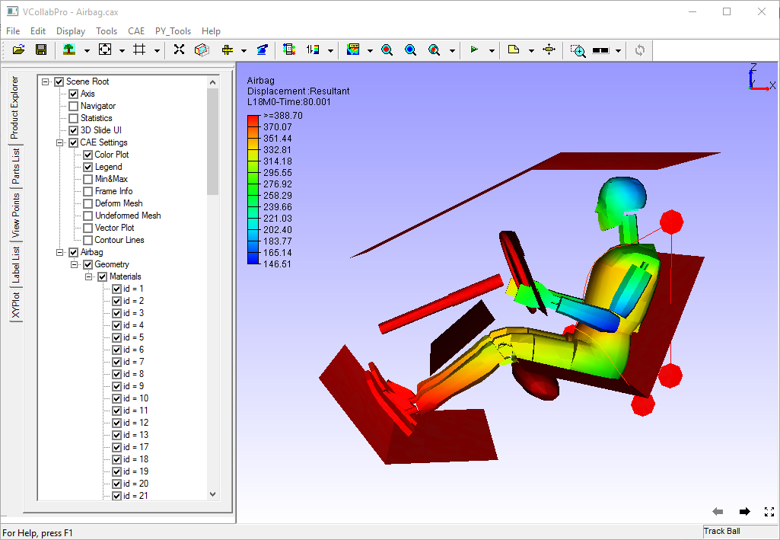
To filter the contour color beyond user range, check the Filter option and click Apply.
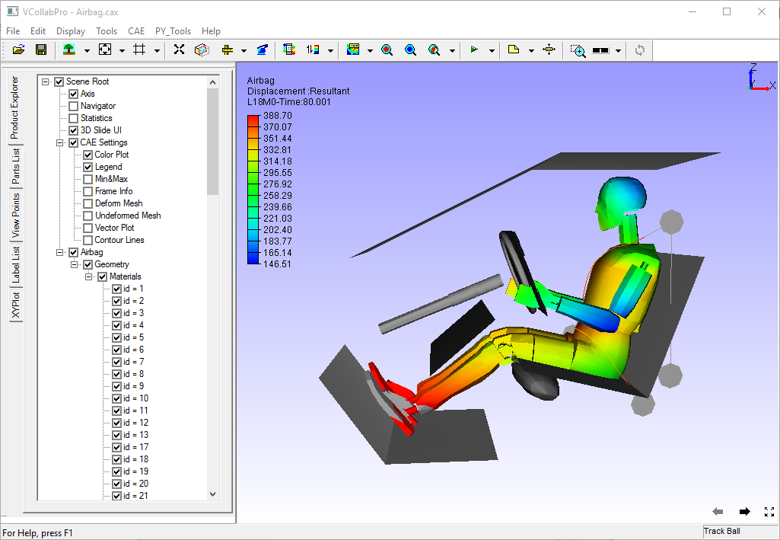
To hide the parts beyond range, check Filter Parts and click Apply.
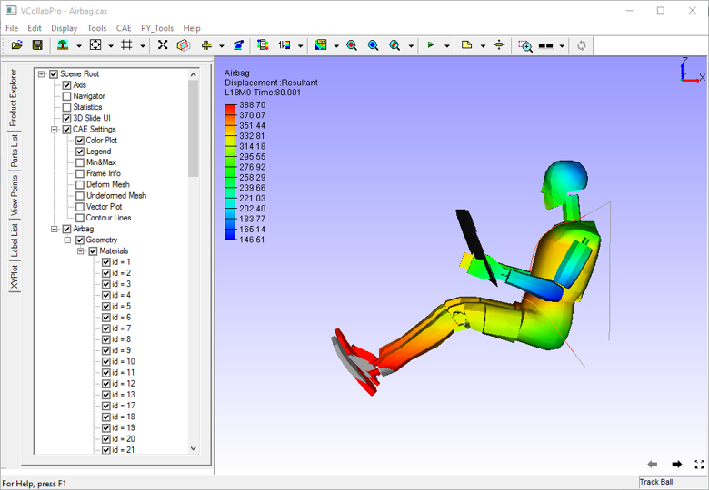
Users can visualize the interested result zone clearly with the above options.

Switching CAE Properties On/Off
VCollab Pro allows users to switch on/off the following CAE properties through product explorer.
Color Plot
Legend
Min & Max
Frame Info
Deform Mesh
Undeformed Mesh
Vector Plot and
Contour Lines